Hello, I'm
An Information Systems graduate with a strong interest in Cybersecurity, particularly Blue Team operations and Security Operations Center (SOC). Currently developing skills in Linux system administration, computer networking, network scanning, and network traffic analysis through hands-on labs and continuous learning.
ABOUT ME
I am an Information Systems graduate from Sekolah Tinggi Teknologi Industri Padang, with a GPA of 3.58/4.00. During my studies, I gained knowledge of web application development, database management, and fundamental information technology concepts.
I am currently developing my competencies in Cybersecurity through structured learning and hands-on laboratory exercises. My learning areas include Linux system administration, server management, computer networking, network scanning, and network traffic analysis.
I am interested in pursuing a career in Cybersecurity, particularly in Blue Team operations and as a SOC Analyst. I am committed to continuously improving my technical skills and knowledge of information security.
TECHNICAL SKILLS
HANDS-ON PRACTICE
Practiced Linux command-line operations, file and directory management, permission configuration, service management, and basic system administration using Kali Linux.
Practiced host discovery, network scanning, port scanning, and service version detection to understand network hosts and exposed services in a controlled lab environment.
Practiced identifying active hosts, scanning open ports, and detecting service versions using Nmap to identify potential security risks in a controlled lab environment.
Practiced Apache2 web server configuration, service management, virtual host setup, and basic server administration in a Kali Linux lab environment.
Practiced reviewing simulated security alerts, examining event details, identifying suspicious indicators, and understanding basic alert classification through cybersecurity training exercises.
EXPERIENCE
Assisted with shipment data recording, goods receiving and distribution, and team coordination to support daily delivery operations.
Led the student organization, coordinated work programs and activities, managed organizational members, and strengthened leadership, communication, and teamwork skills.
Coordinated the planning and implementation of basic education activities for new student organization members.
Assisted customers with product selection, handled sales transactions, checked and managed inventory, and supported daily store operations.
WEB DEVELOPMENT
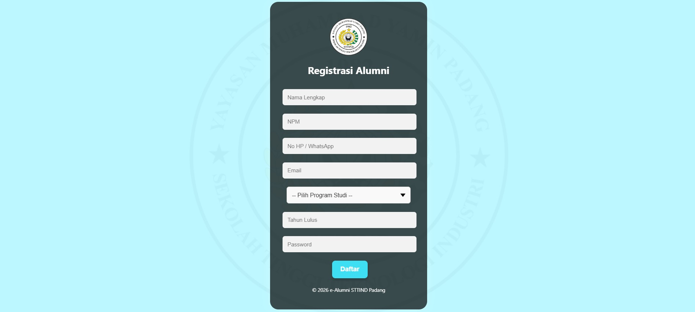
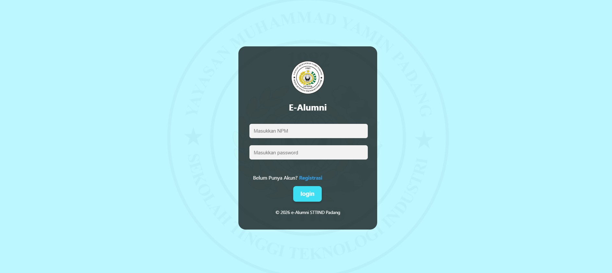
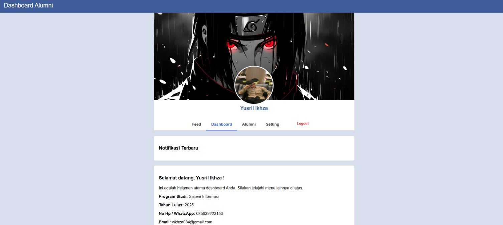
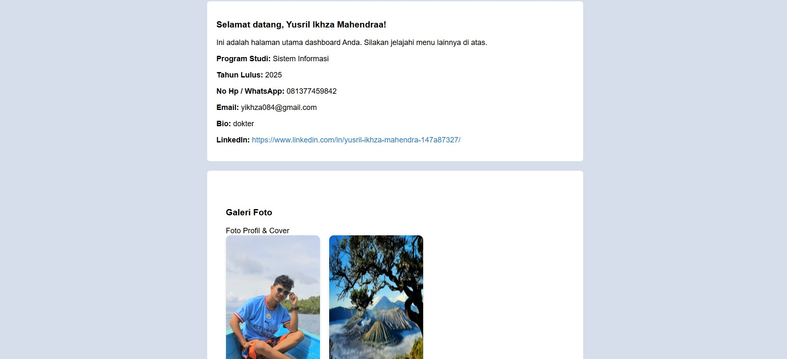
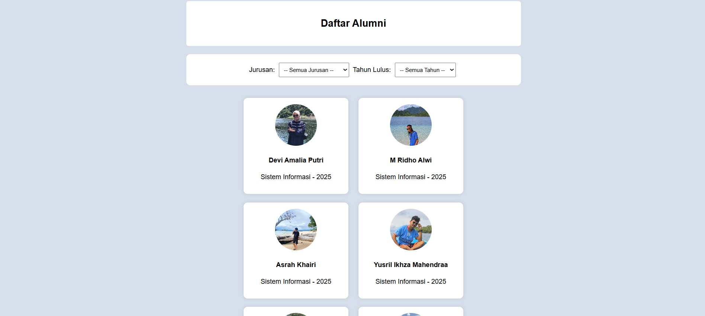
An integrated alumni information system designed to support alumni data management and communication within the university.
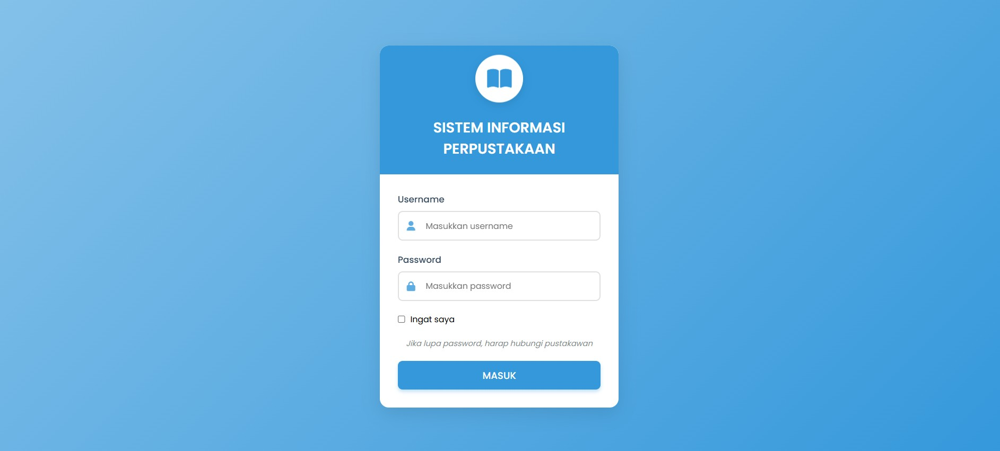
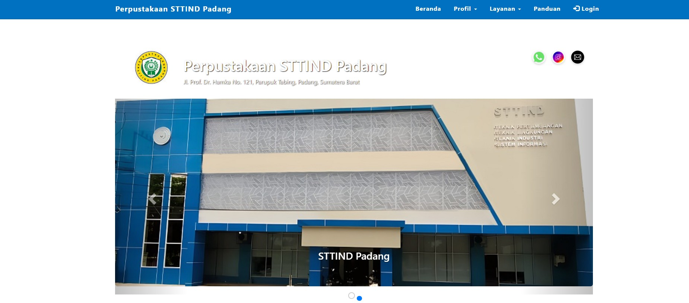
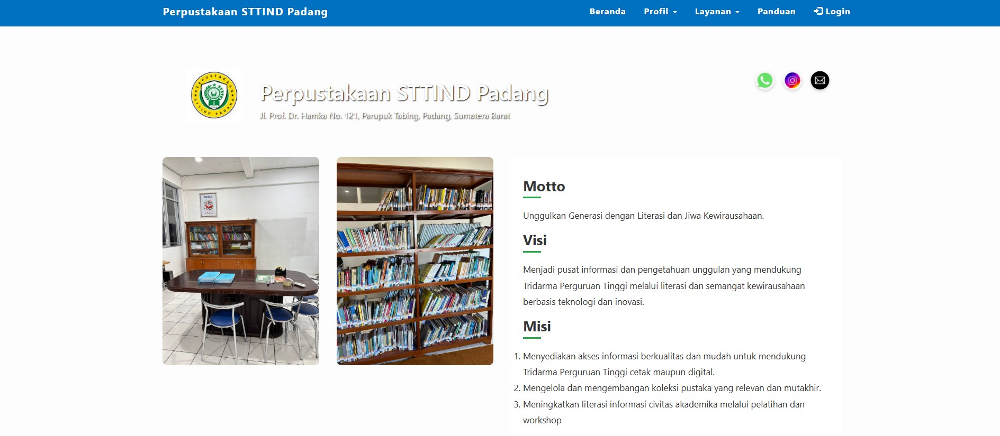
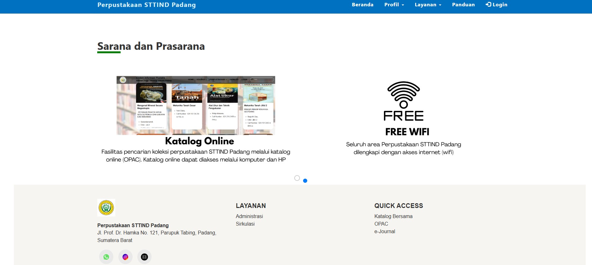
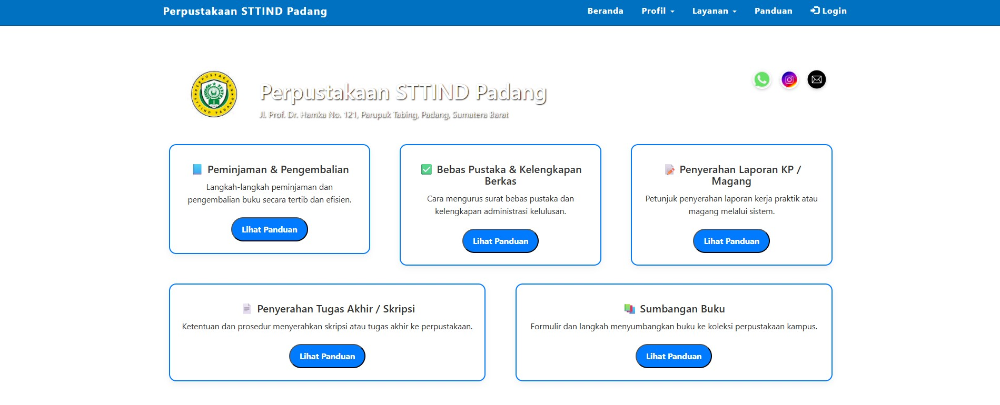
A library information system developed to manage book records, member information, and borrowing activities.
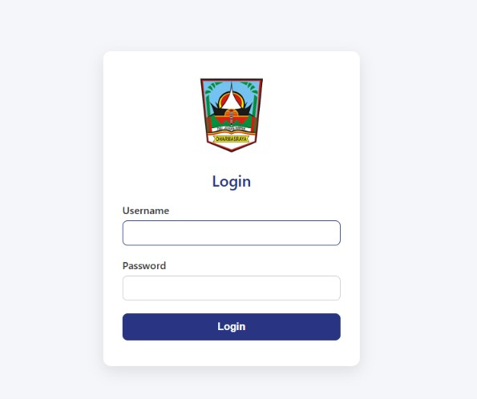
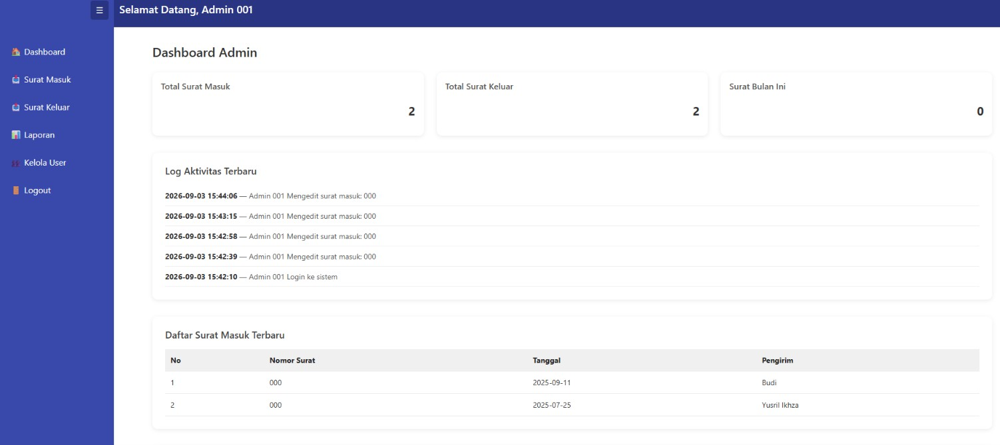
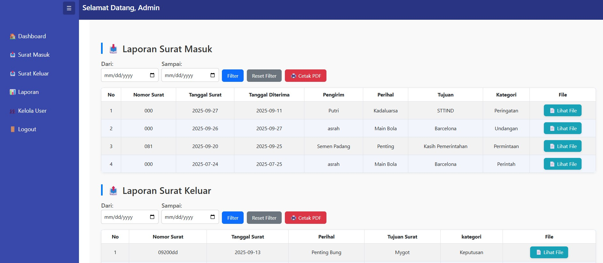
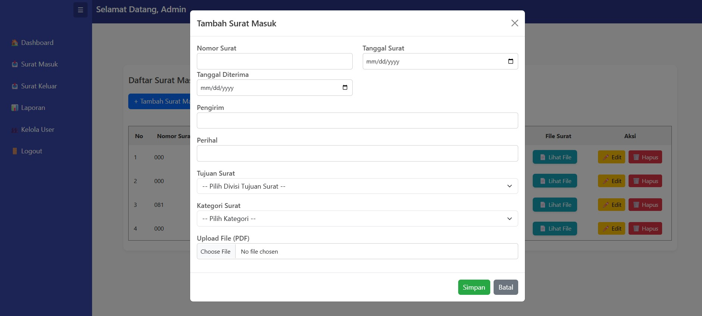
A web-based application designed to support digital document archiving and administrative record management.
CONTACT